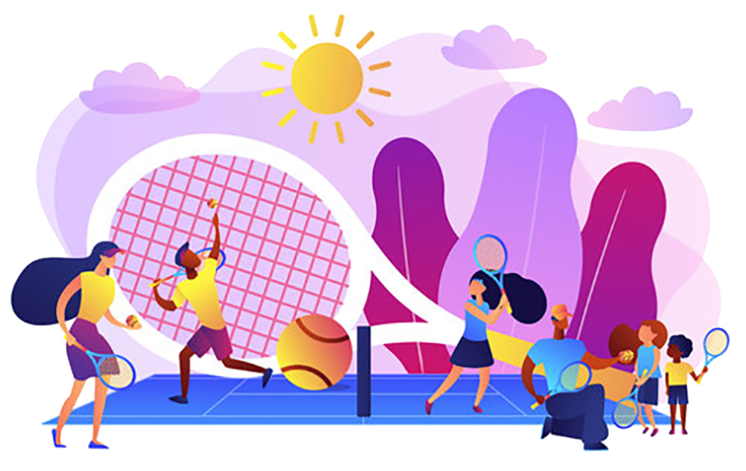
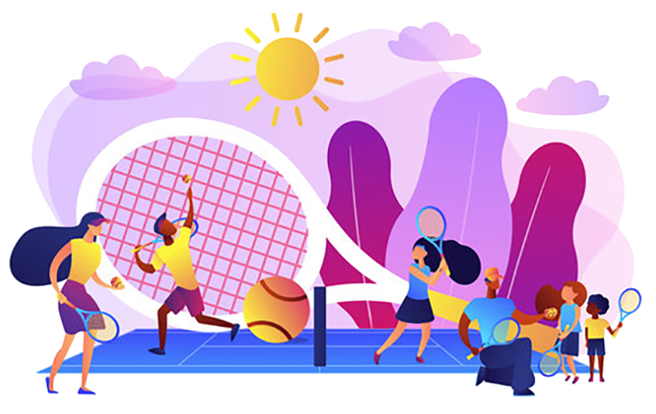
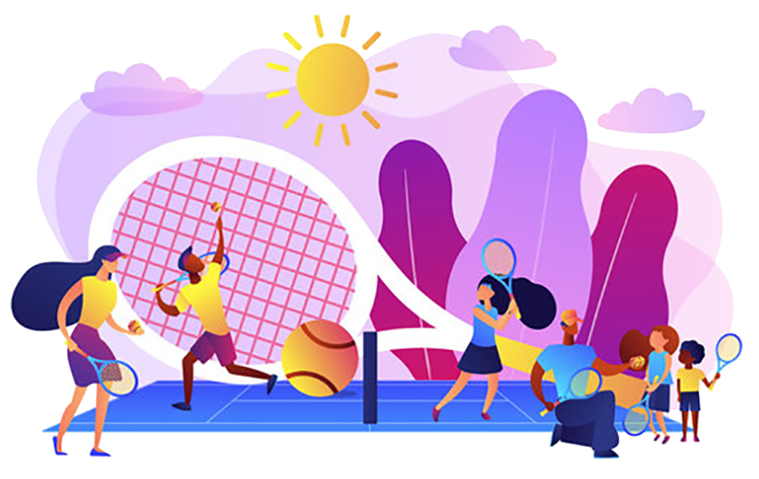

I'm Ariyanto.
a full-stack developer to be
 

a full-stack developer to be

Been there quite long in a project management and business analyst environment. Then out of nowhere decided to continue the learning process because always have a desire to develop a process of continuous improvement. A part-time worker, a tennis lover, a coffee lover, a father to a dog and a spontaenous spirited guy who believe that world would be a better place if we all have a little bit of kindness and compassion. And now always be an owl to catch up with all the lags in IT development (front-end, back-end, data analytics, machine learning) and all stuffs I had no idea a few years back then. Better late than never and never giving up!
In a project management, I get used to work in agile/scrum + kanban environment. I have been using JIRA and Trello for the project management tools, while also discovering others such as monday.com or slack (again being agile). And for data analytics, I keep it simple using Excel, Highchart to produce various of data visualization. And for more sophisticated, I just learn SAP Business Object and Power BI for keeping me up-to-date with the technology.
I started to learn HTML + CSS + Bootstrap for starter. Then now, I am trying to familiarize with a lot of stuff going on around the web development. Javascript for example and with its libraries: ReactJs, AngularJS, VueJS. For the backend, I started to understand Java and Python at the same time. Then I try to play around with Django, NodeJS, C++. Concerning database, I simply began with MySQL. And now I have to bang my head to build with something like NoSQL: MongoDB or PostgreSQL. Ah, last but not least, I have to equip myself with machine learning algorithms (not at the master level) such as Linear Regression, Decision Trees, Neural Network (Supervised ML - Regression), Logistic Regression, Support Vector Machine, KNN (Supervised - Classification), K-Means (Unsupervised ML - Clustering). I am still progressing and I always have that fire to continous improvement.
It all started as a graphic designer. I worked in a pre-press company and my specialty was scanning many documents to give the result as close as it should be from the original, and also designed some book covers. Then in 2006, I worked for a Singaporean' company as a supervisor in a printing industry. In 2007, I started to join a belgian society in Indonesia as a web and graphi designer. I sharpened my skills to be a project manager and also a system analyst, 2 years after. In 2013, I joined an Australian start-up called SoftwareSeni and I became aproject manager and scrum master. Finally, in 2015, I decided to do freelance job for an Australian client shcBond.com as a Project manager and Business Analyst.
There is a proverb: "If you don't know me, then, you would not know who I am". Then please ask me anything!
CONTACT ME© 2021 Ariyanto, B.